|
|
| shelled snails text index | photo index |
| Phylum Mollusca > Class Gastropoda |
| Moon
snails Family Naticidae updated Aug 2020
Where seen? With spherical or oval shells and a huge body, these fierce burrowing snails are commonly seen on our sandy shores. These snails are more commonly seen above ground at night. But a keen observer may still detect their presence by the distinctive trails these snails leave on the surface as they quietly burrow just beneath the sand. What are moon snails? Moon snails belong to the Family Naticidae. These include the Genus Natica, which have a thicker operculum that is shell-like (usually white); and the Genus Polinices, which have a thin operculum made of a horn-like material (usually yellowish) with several whorls. The Naked moon snails of the Genus Sinum have thin shells and very large bodies which cannot be retracted fully into the shell. Features: About 2cm. When a moon snail is fully extended out of its shell, it has an amazingly large body compared to its shell. It achieves this by inflating its tissues with seawater. |
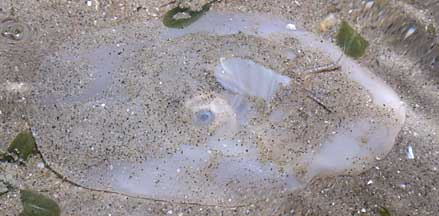 The Ball moon snail, like most moon snails, can deflate the huge body and retract completely into the shell. Changi, May 11 |
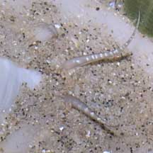 Siphon (upper left) and tentcles |
| Bulldozing for prey: The body forms a wedge shape that helps the snail move under the sand.
The front of the foot is used like a plough. A part of the foot covers
the head as a protective shield. The tentacles and siphon stick out
of this shield. The mantle (a part of its body) extends in two flaps
over the shell on either side. A moon snail's shell often remains shiny and lustrous because the
mantle envelopes its shell, and the snail spends most of its time
under the sand. Encrusting animals have little chance of establishing
on the shell of a living moon snail. Sometimes mistaken for a sea slug when the mantle covers the shell. Some moon snails can't retract completely into their shells: like the Naked moon snail and Bosom moon snail. Here's more on how to tell apart animals that resemble sea slugs. |
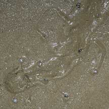 Tiny button snails leaping away from a hunting moon snail. East Coast, Jun 06 |
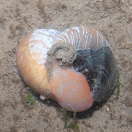 A moon snail with a bivalve enveloped in its foot. Changi, Aug 12 |
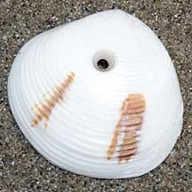 Clam shell with hole neatly drilled, possibly by a moon snail? Changi, Oct 10 |
| What do they eat? Moon snails are fierce predators. They feed on bivalves and snails. A moon snail wraps its huge foot around the hapless prey to suffocate it. If this fails, it has a gland at the tip of its proboscis that secretes an acid to soften the victim's shell. With its radula, a hole is slowly drilled through the shell. The hole created by a moon snail is usually neat and bevelled. |
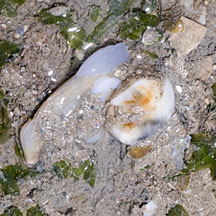 Bivalve escaping a moon snail! Changi, Jul 11 |
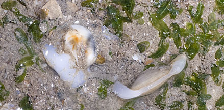 Using its long foot, the bivalve 'leaps' away to safety. |
|
| Moon snail attempting
to eat a bivalve as big as itself! Filmed on Cyrene Reef Aug 2013 shared by Heng Pei Yan on her blog. |
| Snail takeaway? Some moon snails have been seen 'dragging' a small snail shell behind them attached to the foot. Is it taking the meal away to some other place to eat it in safety? |
| Moon babies: The sand collar is the moon snail's egg mass. When the eggs hatch, the collar disintegrates. Thus, an intact collar has living snails in it! Please don't damage the sand collars. More about sand collars. |
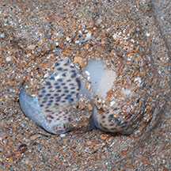 Two snails, mating? or trying to eat the same thing? Tuas, Sep 08 |
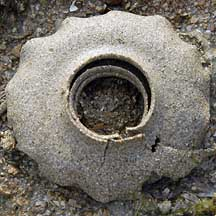 Sand collar: egg mass of a moon snail. more photos of sand collars. Pulau Sekudu, Jul 03 |
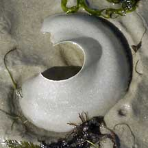 Sand collar: egg mass of a moon snail. more photos of sand collars. Chek Jawa, Nov 04 |
| Role in the habitat: When a moon
snail dies, its shell is usually quickly taken over by a hermit crab. Many
of the moon snail shells you see on the surface will probably be so
occupied. Living moon snails are rarely seen above ground during the
day. Human uses: Some larger moon snail species are sold as food in Asian markets. Status and threats: None of our moon snails are listed among the threatened animals in the Red List of threatened animals of Singapore. However, like other creatures of the intertidal zone, the rest of they are affected by human activities such as reclamation and pollution. Trampling by careless visitors and over-collection can also have an impact on local populations. |
| Some Moon snails on Singapore shores |
|
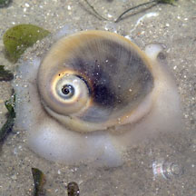 |
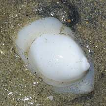 |
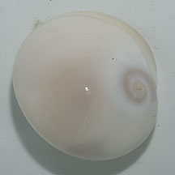 |
|
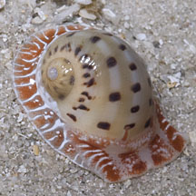 |
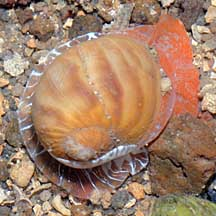 |
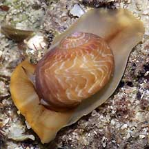 |
|
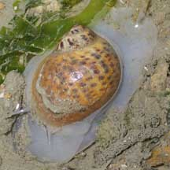 |
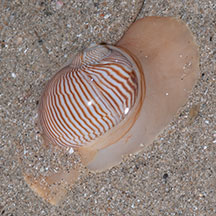 |
|
|
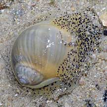 |
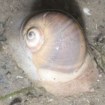 |
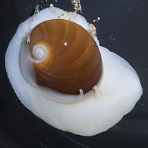 |
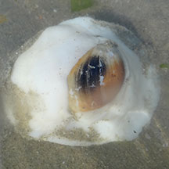 |
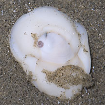 |
|
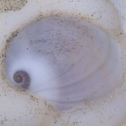 Naked moon snail |
| Family
Naticidae recorded for Singapore from Tan Siong Kiat and Henrietta P. M. Woo, 2010 Preliminary Checklist of The Molluscs of Singapore +from our observation. ^from WORMS
|
Links
References
|